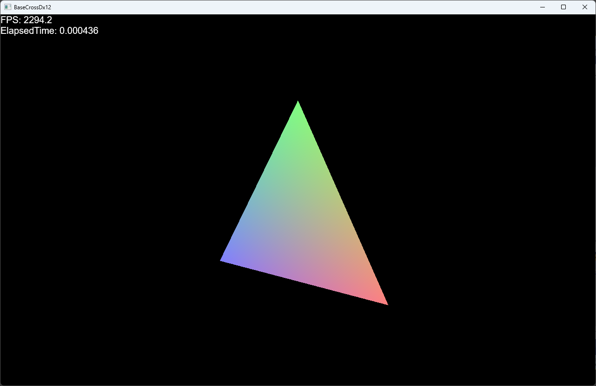
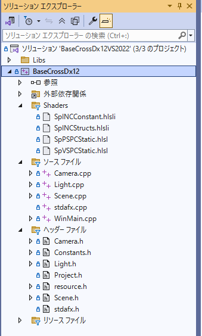

BaseCrossDx12ドキュメント
【Sample001】三角形の描画
このサンプルは
Samples/Sample001ディレクトリ内にあります。VisualStdioで該当ソリューション（VS2022で
BaseCrossDx12VS2022.sln）を開いてください。ビルド後実行すると、以下の画面が現れます。します。

オブジェクトを表示するのに必要な記述
ソリューションエクスプローラを見ると以下のようになってます。

これで分かる通り、EmptyProjectから、いくつかのファイルが増えているのが分かります。
Shadersフォルダに含まれるのは
シェーダーです。このサンプルでは
頂点とカラーデータの頂点フォーマットが扱われますので、そのシェーダーが記述されます。
ヘッダーフィル、ソースファイルには三角形を描画するためのコードが書かれるわけですが
Camera.h/cppは
カメラ、
Light.h/cppは
ライトが記述されます。このサンプルではライトは関係ないですが、一応用意しておきます。
Constants.hはコンスタントバッファなどを記述します。
コンスタントバッファは比較的汎用的に作られてますがこのサンプルのような
三角形の描画には必要のないパラメータが含まれます。もしもっとシンプルな実装を試してみるなら、コンスタントバッファをもっとシンプルにすることができます。その場合シェーダーも書き換える必要があります。
さてそれでは
Camera.h/cppから解説します。
Camera.h/cpp
/*!
@file BaseCamera.h
@brief カメラクラス
@copyright WiZ Tamura Hiroki,Yamanoi Yasushi MIT License (MIT).
MIT License URL: https://opensource.org/license/mit
*/
#pragma once
#include "stdafx.h"
namespace basecross {
//--------------------------------------------------------------------------------------
// カメラ親クラス
//--------------------------------------------------------------------------------------
class Camera : public ObjectInterface {
protected:
Vec3 m_eye; //カメラ位置
Vec3 m_at; //注目点
Vec3 m_up; //カメラの傾き（アップ）
float m_near; //手前の最小距離
float m_far; //奥の最大距離
Mat4x4 m_viewMatrix;
Mat4x4 m_projMatrix;
//--------------------------------------------------------------------------------------
/*!
@brief プロテクトコンストラクタ
@return なし
*/
//--------------------------------------------------------------------------------------
Camera();
virtual ~Camera() {}
public:
//--------------------------------------------------------------------------------------
/*!
@brief カメラ位置の取得
@return カメラ位置
*/
//--------------------------------------------------------------------------------------
virtual const Vec3& GetEye() const;
//--------------------------------------------------------------------------------------
/*!
@brief カメラ位置の設定
@param[in] eye カメラ位置
@return なし
*/
//--------------------------------------------------------------------------------------
virtual void SetEye(const Vec3& eye);
//--------------------------------------------------------------------------------------
/*!
@brief カメラ位置の設定
@param[in] x.y,z カメラ位置
@return なし
*/
//--------------------------------------------------------------------------------------
virtual void SetEye(float x, float y, float z);
//--------------------------------------------------------------------------------------
/*!
@brief カメラ視点の取得
@return カメラ視点
*/
//--------------------------------------------------------------------------------------
virtual const Vec3& GetAt() const;
//--------------------------------------------------------------------------------------
/*!
@brief カメラ視点の設定
@param[in] at カメラ視点
@return なし
*/
//--------------------------------------------------------------------------------------
virtual void SetAt(const Vec3& at);
//--------------------------------------------------------------------------------------
/*!
@brief カメラ視点の設定
@param[in] x,y,z カメラ視点
@return なし
*/
//--------------------------------------------------------------------------------------
virtual void SetAt(float x, float y, float z);
//--------------------------------------------------------------------------------------
/*!
@brief カメラ角度の取得
@return カメラ角度
*/
//--------------------------------------------------------------------------------------
virtual const Vec3& GetUp() const;
//--------------------------------------------------------------------------------------
/*!
@brief カメラ角度の設定
@param[in] up カメラ角度（正規化済みのもの）
@return なし
*/
//--------------------------------------------------------------------------------------
virtual void SetUp(const Vec3& up);
//--------------------------------------------------------------------------------------
/*!
@brief カメラ角度の設定
@param[in] x,y,z カメラ角度（正規化済みのもの）
@return なし
*/
//--------------------------------------------------------------------------------------
virtual void SetUp(float x, float y, float z);
//--------------------------------------------------------------------------------------
/*!
@brief カメラ最近表示距離の取得
@return カメラ最近距離
*/
//--------------------------------------------------------------------------------------
virtual float GetNear() const;
//--------------------------------------------------------------------------------------
/*!
@brief カメラ最近表示距離の設定
@param[in] f カメラ最近表示距離
@return なし
*/
//--------------------------------------------------------------------------------------
virtual void SetNear(float f);
//--------------------------------------------------------------------------------------
/*!
@brief カメラ最遠表示距離の取得
@return カメラ最遠距離
*/
//--------------------------------------------------------------------------------------
virtual float GetFar() const;
//--------------------------------------------------------------------------------------
/*!
@brief カメラ最遠表示距離の設定
@param[in] f カメラ最遠表示距離
@return なし
*/
//--------------------------------------------------------------------------------------
virtual void SetFar(float f);
//--------------------------------------------------------------------------------------
/*!
@brief カメラ行列の計算
@return なし
*/
//--------------------------------------------------------------------------------------
virtual void CalculateMatrix() = 0;
//--------------------------------------------------------------------------------------
/*!
@brief ビュー行列の取得
@return ビュー行列
*/
//--------------------------------------------------------------------------------------
virtual const Mat4x4& GetViewMatrix() const;
//--------------------------------------------------------------------------------------
/*!
@brief 射影行列の取得
@return 射影行列
*/
//--------------------------------------------------------------------------------------
virtual const Mat4x4& GetProjMatrix() const;
//--------------------------------------------------------------------------------------
/*!
@brief 作成時の処理
@return なし
*/
//--------------------------------------------------------------------------------------
virtual void OnCreate();
//--------------------------------------------------------------------------------------
/*!
@brief 更新時の処理
@param[in] elapsedTime 全ターンからの経過時間
@return なし
*/
//--------------------------------------------------------------------------------------
virtual void OnUpdate(double elapsedTime);
};
//--------------------------------------------------------------------------------------
// 遠近法カメラ
//--------------------------------------------------------------------------------------
class PerspecCamera : public Camera {
float m_fovY; //射影角度
float m_aspect; //アスペクト比
public:
//--------------------------------------------------------------------------------------
/*!
@brief コンストラクタ
@return なし
*/
//--------------------------------------------------------------------------------------
PerspecCamera();
virtual ~PerspecCamera() {}
//--------------------------------------------------------------------------------------
/*!
@brief 射影角度の取得
@return 射影角度
*/
//--------------------------------------------------------------------------------------
virtual float GetFovY() const;
//--------------------------------------------------------------------------------------
/*!
@brief 射影角度の設定
@param[in] f 射影角度
@return なし
*/
//--------------------------------------------------------------------------------------
virtual void SetFovY(float f);
//--------------------------------------------------------------------------------------
/*!
@brief アスペクト比の取得
@return アスペクト比
*/
//--------------------------------------------------------------------------------------
virtual float GetAspect() const;
//--------------------------------------------------------------------------------------
/*!
@brief アスペクト比の設定
@param[in] f アスペクト比
@return なし
*/
//--------------------------------------------------------------------------------------
virtual void SetAspect(float f);
//--------------------------------------------------------------------------------------
/*!
@brief カメラ行列の計算
@return なし
*/
//--------------------------------------------------------------------------------------
virtual void CalculateMatrix()override;
};
//--------------------------------------------------------------------------------------
// 正射影法カメラ
//--------------------------------------------------------------------------------------
class OrthoCamera : public Camera {
float m_width; //遠近法を使わない場合（正射影）の幅
float m_height; //遠近法を使わない場合（正射影）の高さ
public:
//--------------------------------------------------------------------------------------
/*!
@brief コンストラクタ
@return なし
*/
//--------------------------------------------------------------------------------------
OrthoCamera();
virtual ~OrthoCamera() {}
//--------------------------------------------------------------------------------------
/*!
@brief 幅の取得
@return 幅
*/
//--------------------------------------------------------------------------------------
virtual float GetWidth() const;
//--------------------------------------------------------------------------------------
/*!
@brief 幅の設定
@param[in] f 幅
@return なし
*/
//--------------------------------------------------------------------------------------
virtual void SetWidth(float f);
//--------------------------------------------------------------------------------------
/*!
@brief 高さの取得
@return 高さ
*/
//--------------------------------------------------------------------------------------
virtual float GetHeight() const;
//--------------------------------------------------------------------------------------
/*!
@brief 高さの設定
@param[in] f 高さ
@return なし
*/
//--------------------------------------------------------------------------------------
virtual void SetHeight(float f);
//--------------------------------------------------------------------------------------
/*!
@brief カメラ行列の計算
@return なし
*/
//--------------------------------------------------------------------------------------
virtual void CalculateMatrix()override;
};
}
// end namespace basecross
このように
Cameraクラスのコンストラクタは
protectedになっており、実際の実装は
PerspecCameraクラスもしくは
OrthoCameraクラスで行います。メンバ関数は大部分がアクセサですが、
CalculateMatrix関数がカメラタイプごとに別になってます。以下は
PerspecCameraクラスの
CalculateMatrix関数です。
Camera.cppに記述があります。
void PerspecCamera::CalculateMatrix() {
auto device = BaseDevice::GetBaseDevice();
float width = (float)device->GetWidth();
float height = (float)device->GetHeight();
m_aspect = width / height;
m_viewMatrix
= Mat4x4(XMMatrixLookAtLH(XMLoadFloat3(&m_eye), XMLoadFloat3(&m_at), XMLoadFloat3(&m_up)));
m_projMatrix
= Mat4x4(XMMatrixPerspectiveFovLH(m_fovY, m_aspect, m_near, m_far));
}
このように
XMMatrixLookAtLH関数および
XMMatrixPerspectiveFovLH関数でビュー行列及び射影行列を作り出しています。
Light.h/cpp
続いて
Light.h/cppです。
ライトはこのサンプルでは必要ありませんが、コンスタントバッファに入力があり、一応作っておきます。こうすることで今後このサンプルをもとにあらたなプロジェクトを作る指針になります。
以下は
Light.hです。
/*!
@file Light.h
@brief ライトクラス
@copyright WiZ Tamura Hiroki,Yamanoi Yasushi MIT License (MIT).
MIT License URL: https://opensource.org/license/mit
*/
#pragma once
#include "stdafx.h"
namespace basecross {
//--------------------------------------------------------------------------------------
// ライト
//--------------------------------------------------------------------------------------
struct Light {
Vec3 m_directional; //ライトの向き
Vec4 m_diffuseColor; //ディフィーズ色
Vec4 m_specularColor; //スペキュラー色
Vec3 m_position; //位置（使用しない場合あり）
Vec3 m_at; //指している場所（使用しない場合あり）
//--------------------------------------------------------------------------------------
/*!
@brief デフォルトコンストラクタ
@return なし
*/
//--------------------------------------------------------------------------------------
Light() :
m_directional(0, -1.0f, 0),
m_diffuseColor(1.0f, 1.0f, 1.0f, 1.0f),
m_specularColor(0.2f, 0.2f, 0.2f, 1.0f),
m_position(0.0f, 0.0f, 0.0f),
m_at(0.0f, 0.0f, 0.0f)
{
}
//--------------------------------------------------------------------------------------
/*!
@brief コンストラクタ
@param[in] dir ディレクショナル
@param[in] def ディフィーズ色
@param[in] sp スペキュラー色
@return なし
*/
//--------------------------------------------------------------------------------------
Light(const Vec3& dir, const Vec4& def, const Vec4& sp) :
m_directional(dir),
m_diffuseColor(def),
m_specularColor(sp),
m_position(0.0f, 0.0f, 0.0f),
m_at(0.0f, 0.0f, 0.0f)
{
//ライト位置の仮設定
m_position = m_at - dir;
}
//--------------------------------------------------------------------------------------
/*!
@brief コピーコンストラクタ
@param[in] other コピー元ライト
@return なし
*/
//--------------------------------------------------------------------------------------
Light(const Light& other) :
m_directional(other.m_directional),
m_diffuseColor(other.m_diffuseColor),
m_specularColor(other.m_specularColor),
m_position(other.m_position),
m_at(other.m_at)
{
}
//--------------------------------------------------------------------------------------
/*!
@brief 代入
@param[in] other 代入元ライト
@return ライトオブジェクト
*/
//--------------------------------------------------------------------------------------
Light& operator=(const Light& other) {
if (this != &other) {
m_directional = other.m_directional;
m_diffuseColor = other.m_diffuseColor;
m_specularColor = other.m_specularColor;
m_position = other.m_position;
m_at = other.m_at;
}
return *this;
}
~Light() {}
//--------------------------------------------------------------------------------------
/*!
@brief ライトの位置指す位置から、ディレクショナルライトを作る
@param[in] pos ライト位置
@param[in] at ライトの指す位置
@return なし
*/
//--------------------------------------------------------------------------------------
void SetPositionToDirectional(const Vec3& pos, const Vec3& at) {
m_position = pos;
m_at = at;
auto dir = XMVectorSubtract(XMLoadFloat3(&at), XMLoadFloat3(&pos));
dir = XMVector3Normalize(dir);
m_directional = Vec3(dir);
}
};
//--------------------------------------------------------------------------------------
// ライトのセット
//--------------------------------------------------------------------------------------
class LightSet :public ObjectInterface {
const size_t m_maxLights = 3;
std::vector<Light> m_lights;
Vec4 m_ambient;
size_t m_mainIndex;
public:
LightSet();
virtual ~LightSet() {}
//--------------------------------------------------------------------------------------
/*!
@brief ライトの取得
@param[in] index インデックス
@return 指定のインデックスのライトを返す
*/
//--------------------------------------------------------------------------------------
virtual Light GetLight(size_t index) const;
//--------------------------------------------------------------------------------------
/*!
@brief ライト数の取得
@return ライト数
*/
//--------------------------------------------------------------------------------------
virtual size_t GetNumLights() const {
return m_lights.size();
}
//--------------------------------------------------------------------------------------
/*!
@brief ライトの設定
@param[in] index インデックス
@param[in] light 設定するライト
@return なし
*/
//--------------------------------------------------------------------------------------
virtual void SetLight(size_t index, const Light& light);
//--------------------------------------------------------------------------------------
/*!
@brief ライトの追加
@param[in] light 追加するライト
@return なし
*/
//--------------------------------------------------------------------------------------
virtual void AddLight(const Light& light);
//--------------------------------------------------------------------------------------
/*!
@brief アンビエントの取得
@return アンビエント
*/
//--------------------------------------------------------------------------------------
virtual const Vec4 GetAmbient() const { return m_ambient; }
//--------------------------------------------------------------------------------------
/*!
@brief アンビエントの設定
@param[in] a 設定するアンビエント
@return なし
*/
//--------------------------------------------------------------------------------------
virtual void SetAmbient(const Vec4& a) { m_ambient = a; }
//--------------------------------------------------------------------------------------
/*!
@brief メインライトインデックスの取得
@return メインライトインデックス
*/
//--------------------------------------------------------------------------------------
virtual size_t GetMainIndex() const { return m_mainIndex; }
//--------------------------------------------------------------------------------------
/*!
@brief メインライトインデックスの設定
@param[in] index 設定するインデックス
@return なし
*/
//--------------------------------------------------------------------------------------
virtual void SetMainIndex(size_t index) { m_mainIndex = index; }
//--------------------------------------------------------------------------------------
/*!
@brief メインライトの取得
@return メインライト
*/
//--------------------------------------------------------------------------------------
virtual Light GetMainBaseLight() const {
return GetLight(GetMainIndex());
}
//--------------------------------------------------------------------------------------
/*!
@brief 初期化を行う（デフォルトのライトを作成する）
@return なし
*/
//--------------------------------------------------------------------------------------
virtual void OnCreate();
//--------------------------------------------------------------------------------------
/*!
@brief 更新処理
@param[in] elapsedTime 前のターンからの時間
@return なし
*/
//--------------------------------------------------------------------------------------
virtual void OnUpdate(double elapsedTime) {}
};
}
// end namespace basecross
このように
LightSetクラスは
Light構造体の集合です。3つまで設定できます。
OnCreate関数で、デフォルトのライティングを設定します。
SetLight関数で、それぞれのライトの内容を修正できます。
動的に修正する場合は
LightSetクラスを継承して
MyLightSetクラスなどを作り、
OnUpdate関数を多重定義することもできます。
Scene.h/cpp
続いて
Scene.h/cppを解説します。以下は
Scene.hです。
/*!
@file Scene.h
@brief シーンクラス
*/
#pragma once
#include "stdafx.h"
#include "Project.h"
namespace basecross {
DECLARE_DX12SHADER(SpVSPCStatic)
DECLARE_DX12SHADER(SpPSPCStatic)
//--------------------------------------------------------------------------------------
// シーン
//--------------------------------------------------------------------------------------
class Scene : public BaseScene
{
SimpleConstant m_constantBuffer;
size_t m_constantBufferIndex;
std::shared_ptr<BaseMesh> m_mesh;
double m_totalTime;
TransParam m_param;
std::shared_ptr<Camera> m_camera;
std::shared_ptr<LightSet> m_lightSet;
public:
//--------------------------------------------------------------------------------------
/*!
@brief コンストラクタ
@param[in] frameCount フレーム数
@param[in] pPrimDevice デバイス
@return なし
*/
//--------------------------------------------------------------------------------------
Scene(UINT frameCount, PrimDevice* pPrimDevice);
virtual ~Scene();
protected:
//--------------------------------------------------------------------------------------
/*!
@brief コンテンツの作成
@param[in] pDevice デバイス
@param[in] pCommandList コマンドリスト
@return なし
*/
//--------------------------------------------------------------------------------------
virtual void CreateAssetResources(ID3D12Device* pDevice, ID3D12GraphicsCommandList* pCommandList)override;
//--------------------------------------------------------------------------------------
/*!
@brief 更新処理
@param[in] elapsedTime 前のターンからの時間
@return なし
*/
//--------------------------------------------------------------------------------------
virtual void Update(double elapsedTime)override;
//--------------------------------------------------------------------------------------
/*!
@brief コンスタントバッファの更新
@return なし
*/
//--------------------------------------------------------------------------------------
virtual void UpdateConstantBuffers()override;
//--------------------------------------------------------------------------------------
/*!
@brief コンスタントバッファのコミット
@return なし
*/
//--------------------------------------------------------------------------------------
virtual void CommitConstantBuffers()override;
//--------------------------------------------------------------------------------------
/*!
@brief UIの更新
@param[in] uiLayer UIレイヤー
@return なし
*/
//--------------------------------------------------------------------------------------
virtual void UpdateUI(std::unique_ptr<UILayer>& uiLayer)override;
//--------------------------------------------------------------------------------------
/*!
@brief シャドウマップの描画
@param[in] コマンドリスト
@return なし
*/
//--------------------------------------------------------------------------------------
virtual void ShadowPass(ID3D12GraphicsCommandList* pCommandList)override {}
//--------------------------------------------------------------------------------------
/*!
@brief シーンの描画
@param[in] コマンドリスト
@return なし
*/
//--------------------------------------------------------------------------------------
virtual void ScenePass(ID3D12GraphicsCommandList* pCommandList);
};
}
//end namespace basecross
EmptyProjectでは未定義だった関数が定義されています。
冒頭の
DECLARE_DX12SHADER(SpVSPCStatic)
DECLARE_DX12SHADER(SpPSPCStatic)
はシェーダークラスの宣言です。この記述はマクロで、以下のような宣言です。
#define DECLARE_DX12SHADER(ShaderName) class ShaderName : public Dx12Shader<ShaderName>{ \
public: \
ShaderName(); \
};
すなわち
class SpVSPCStatic : public Dx12Shader<SpVSPCStatic>{
public:
SpVSPCStatic();
};
のように展開されます。
以下は
Scene.cppです。
Scene.cppは
Scene.hに宣言された関数の実体が書かれます。
まずマクロですが
IMPLEMENT_DX12SHADER(SpVSPCStatic, App::GetShadersDir() + L"SpVSPCStatic.cso")
IMPLEMENT_DX12SHADER(SpPSPCStatic, App::GetShadersDir() + L"SpPSPCStatic.cso")
はシェーダークラスの実体です。このマクロは
#define IMPLEMENT_DX12SHADER(ShaderName,CsoFilename) std::unique_ptr<ShaderName, ShaderName::Deleter> ShaderName::m_ptr; \
ShaderName::ShaderName() : \
Dx12Shader(CsoFilename){}
となっており、
IMPLEMENT_DX12SHADER(SpVSPCStatic, App::GetShadersDir() + L"SpVSPCStatic.cso")
は
std::unique_ptr<SpVSPCStatic, SpVSPCStatic::Deleter> SpVSPCStatic::m_ptr;
SpVSPCStatic::SpVSPCStatic() :
Dx12Shader(L"../media/Shaders/SpVSPCStatic.cso"){}
となります。
続いて
Scene::CreateAssetResources関数は
void Scene::CreateAssetResources(ID3D12Device* pDevice, ID3D12GraphicsCommandList* pCommandList) {
//カメラとライトの設定
m_camera = ObjectFactory::Create<PerspecCamera>();
m_camera->SetEye(Vec3(0, 5.0f, -10.0f));
m_camera->SetAt(Vec3(0, 0, 0));
m_lightSet = ObjectFactory::Create<LightSet>();
//パラメータの初期化
m_param.scale = Vec3(5.0f, 5.0f, 1.0f);
auto quat = XMQuaternionIdentity();
m_param.quaternion = Quat(quat);
m_param.position = Vec3(0.0f, 0.0f, 0.0f);
//頂点の作成
std::vector<VertexPositionColor> vertices = {
{ VertexPositionColor(Vec3(-0.5f, -0.5f, 0.0f),Col4(1.0f, 0.0f, 0.0f,1.0f)) },
{ VertexPositionColor(Vec3(0.0f, 0.5f, 0.0f), Col4(0.0f, 1.0f, 0.0f,1.0f)) },
{ VertexPositionColor(Vec3(0.5f, -0.5f, 0.0f), Col4(0.0f, 0.0f, 1.0f,1.0f)) }
};
//インデックス配列
std::vector<uint32_t> indices = { 0, 1, 2 };
//メッシュの作成
m_mesh = BaseMesh::CreateBaseMesh<VertexPositionColor>(pCommandList, vertices, indices);
//コンスタントバッファの作成
auto pBaseScene = BaseScene::Get();
auto& frameResources = pBaseScene->GetFrameResources();
auto pBaseDevice = BaseDevice::GetBaseDevice();
//デフォルトのコンスタントバッファ
for (size_t i = 0; i < BaseDevice::FrameCount; i++) {
m_constantBufferIndex =
frameResources[i]->AddBaseConstantBufferSet<SimpleConstant>(pBaseDevice->GetD3D12Device());
}
// シーン描画のパイプラインステートの作成
{
ComPtr<ID3D12PipelineState> spPCPipelineState
= PipelineStatePool::GetPipelineState(L"SpPCStatic");
CD3DX12_RASTERIZER_DESC rasterizerStateDesc(D3D12_DEFAULT);
//カリング
rasterizerStateDesc.CullMode = D3D12_CULL_MODE_NONE;
D3D12_GRAPHICS_PIPELINE_STATE_DESC psoDesc = {};
ZeroMemory(&psoDesc, sizeof(psoDesc));
psoDesc.InputLayout = { VertexPositionColor::GetVertexElement(), VertexPositionColor::GetNumElements() };
psoDesc.pRootSignature = RootSignaturePool::GetRootSignature(L"BaseCrossDefault").Get();
psoDesc.VS =
{
reinterpret_cast<UINT8*>(SpVSPCStatic::GetPtr()->GetShaderComPtr()->GetBufferPointer()),
SpVSPCStatic::GetPtr()->GetShaderComPtr()->GetBufferSize()
};
psoDesc.PS =
{
reinterpret_cast<UINT8*>(SpPSPCStatic::GetPtr()->GetShaderComPtr()->GetBufferPointer()),
SpPSPCStatic::GetPtr()->GetShaderComPtr()->GetBufferSize()
};
psoDesc.RasterizerState = rasterizerStateDesc;
psoDesc.BlendState = BlendState::GetOpaqueBlend();
psoDesc.DepthStencilState = CD3DX12_DEPTH_STENCIL_DESC(D3D12_DEFAULT);
psoDesc.DSVFormat = DXGI_FORMAT_D32_FLOAT;
psoDesc.SampleMask = UINT_MAX;
psoDesc.PrimitiveTopologyType = D3D12_PRIMITIVE_TOPOLOGY_TYPE_TRIANGLE;
psoDesc.NumRenderTargets = 1;
psoDesc.RTVFormats[0] = DXGI_FORMAT_R8G8B8A8_UNORM;
psoDesc.SampleDesc.Count = 1;
//spPCPipelineStateパイプラインステート作成
if (!spPCPipelineState) {
ThrowIfFailed(App::GetID3D12Device()->CreateGraphicsPipelineState(&psoDesc, IID_PPV_ARGS(&spPCPipelineState)));
NAME_D3D12_OBJECT(spPCPipelineState);
PipelineStatePool::AddPipelineState(L"SpPCStatic", spPCPipelineState);
}
}
}
となります。
ここでは、頂点やインデックスを作成し、パイプラインステートも作成します。
続いて
Scene::Update関数です。
void Scene::Update(double elapsedTime) {
m_totalTime += elapsedTime;
if (m_totalTime >= XM_2PI) {
m_totalTime = 0.0;
}
Quat spanQt(Vec3(0.0f, 1.0f, 0.0f), (float)(elapsedTime * 2));
Quat quaternion(m_param.quaternion);
quaternion *= spanQt;
m_param.quaternion = quaternion;
UpdateConstantBuffers();
CommitConstantBuffers();
}
ここでは、回転するパラメータを修正して、
UpdateConstantBuffers関数および
CommitConstantBuffers関数を呼び出します。
続いて
Scene::UpdateConstantBuffers関数です。コンスタントバッファの更新です。
void Scene::UpdateConstantBuffers() {
//初期化
m_constantBuffer = {};
Mat4x4 world;
world.affineTransformation(
m_param.scale,
m_param.rotOrigin,
m_param.quaternion,
m_param.position
);
//転置する
world.transpose();
//ビューと射影行列を得る
Mat4x4 viewMat = m_camera->GetViewMatrix();
//転置する
viewMat.transpose();
Mat4x4 projMat = m_camera->GetProjMatrix();
//転置する
projMat.transpose();
m_constantBuffer.world = world;
m_constantBuffer.view = viewMat;
m_constantBuffer.projection = projMat;
//エミッシブ
m_constantBuffer.emissive = Col4(0.5f, 0.5f, 0.5f, 1.0f);
//デフィーズ
m_constantBuffer.diffuse = Col4(0.5f, 0.5f, 0.5f, 1.0f);
//スペキュラー
m_constantBuffer.specular = Col4(0.5f, 0.5f, 0.5f, 1.0f);
//ライティング
auto index = m_lightSet->GetMainIndex();
auto light = m_lightSet->GetLight(index);
m_constantBuffer.lightDir = light.m_directional;
m_constantBuffer.lightDir.w = 1.0f;
m_constantBuffer.eyePos = m_camera->GetEye();
m_constantBuffer.eyePos.w = 1.0f;
m_constantBuffer.activeFlg.x = 0;
}
続いて
Scene::CommitConstantBuffers関数です。コンスタントバッファのコミットです。
BaseCrossDx12は、フレームを3つ持ってます。これらはターン毎に入れ替えられます。
Scene::CommitConstantBuffersは、ターゲットとなるフレームのGPUに直結するコンスタンとバッファを更新します。
この先どうするか
このサンプルでは
BaseCrossDx12でオブジェクトを描画する最低限の処理が記述されています。
すなわちこの3角形を、モデルにすれば（簡単ではないですが）、モデルの描画ができます。
プレイヤーや敵キャラも基本的にこの延長線で記述することができます。
しかし、このままオブジェクトを追加していったのでは非効率すぎます。
そこで
BaseCrossDx12では前バージョンの
BaseCross64のフルバージョンにあったようなフレームワークも実装してあります。
スタンダードサンプルがそのサンプルです。
しかし、フレームワークを自作したい場合は、この
ベーシックサンプルをふくらませて作成するのがよいでしょう。